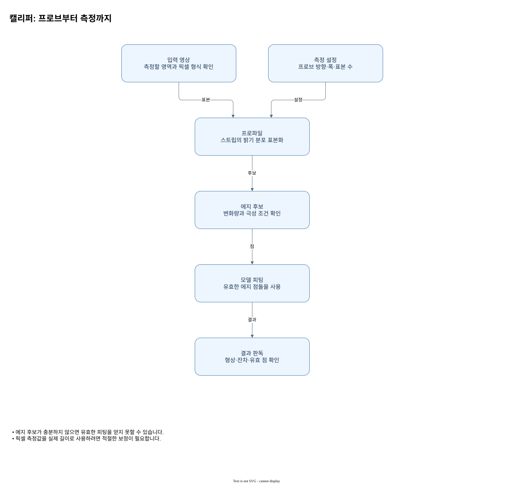

Rust 모델 생성과 실행
네 생성자 모두 검증 후 결과를 반환하고, 각 모델의 measure(&self, image: &ZImage)는 독립 결과 스냅샷을 반환합니다. 좌표는 ROI 로컬, 길이는 픽셀, 각도는 라디안입니다. 전체 원에서는 마지막 각도를 중복하지 않습니다. 직선의 탐색 방향은 법선에 skew를 더한 방향입니다.

판독 기준
- 에지 후보가 충분하지 않으면 유효한 피팅을 얻지 못할 수 있습니다.
- 픽셀 측정값을 실제 길이로 사용하려면 적절한 보정이 필요합니다.
LineMeasurementModel::new(start: Point2, end: Point2, search_skew_radians: f64, probes: ProbeSettings) -> ZResult<Self>
CircleMeasurementModel::new(center: Point2, radius: f64, start_angle: f64, end_angle: f64, probes: ProbeSettings) -> ZResult<Self>
EllipseMeasurementModel::new(center: Point2, major_radius: f64, minor_radius: f64, angle: f64, start_angle: f64, end_angle: f64, probes: ShapeProbeSettings, fit: RobustFitOptions) -> ZResult<Self>
RectangleMeasurementModel::new(center: Point2, half_width: f64, half_height: f64, angle: f64, probes: ShapeProbeSettings, fit: RobustFitOptions) -> ZResult<Self>생성 시에는 이미지 픽셀을 읽지 않고 기하와 설정을 검사합니다. 선은 두 끝점을, 원은 중심·반경·시작과 끝 각도를 받으며, 타원과 사각형은 각각 반축 또는 반폭과 회전을 명시합니다. 모든 위치는 나중에 전달할 이미지의 ROI 로컬 좌표이고 각도는 라디안입니다. 생성이 성공해도 특정 영상 안에서 모든 프로브가 유효하다는 뜻은 아닙니다.
measure에 영상을 빌려주면 모델은 재사용되고 결과는 독립 스냅샷으로 반환됩니다. 호출자는 먼저 반환 오류를 처리한 다음 결과의 상태와 fit() 유무를 확인해야 합니다. 선 모델을 서로 다른 프레임에 반복 적용할 때는 매 프레임의 ROI 원점과 설정이 동일한 의미를 가지는지도 확인하십시오. 적합값이 없으면 유효한 좌표 0을 대신 넣지 않습니다.
원호의 끝 각도는 시작 각도보다 커야 하고 범위는 한 바퀴 이하입니다. 사각형에서는 길이가 아닌 반폭을 입력하므로 원하는 전체 폭과 높이를 그대로 넣지 않도록 주의합니다. 입력 형상은 탐색 기준이고 반환 형상은 영상의 검출점으로부터 계산된 결과입니다.
적용 순서와 결과 판독
직선과 원 모델은 탐색할 기준 기하가 다르므로 같은 숫자를 순서만 바꾸어 전달할 수 없습니다. 직선에서는 기준을 따라 프로브를 배치하고 원에서는 원주 주변에 관측을 배치합니다. 각 실행 결과는 해당 입력 이미지에 대한 관측이므로 기준 형상과 결과 형상을 분리해 표시해야 합니다. 예를 들어 기준 중심이 영상 중앙에 있어도 반환 중심은 관측된 에지의 위치에 따라 달라질 수 있습니다. 결과가 실패한 경우 중심이나 반지름을 정상적인 0으로 대체하지 마십시오.
| 확인 단계 | 판독과 조치 |
|---|---|
| 기준 직선 | 탐색 위치를 배치하는 입력 기하입니다. |
| 기준 원 | 중심과 반지름으로 원주 탐색을 정합니다. |
| 실행 입력 | 같은 좌표계의 이미지와 설정을 전달합니다. |
| 결과 형상 | 상태와 관측을 확인한 후 치수를 해석합니다. |